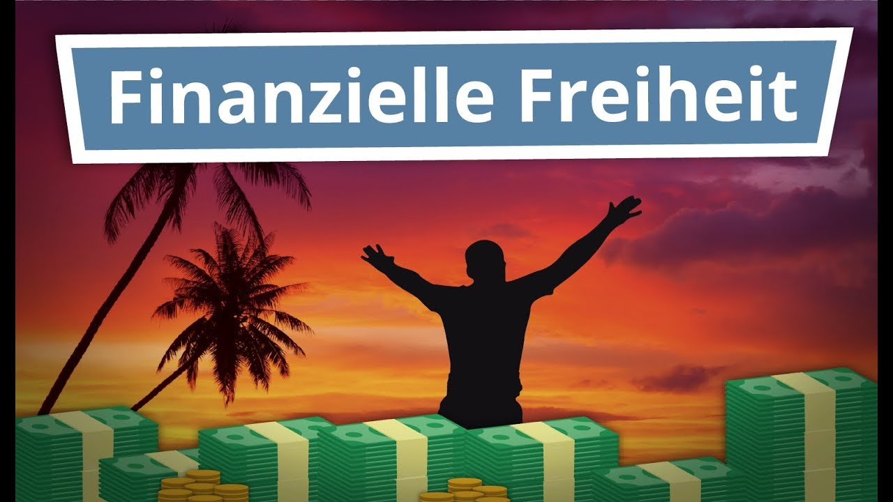

Welcome to Finanzielle freiheit
Was ist finanzielle Freiheit?
2020.12.03 11:55Büchertipps Konto & Depot Facebook Instagram Youtube Pinterest LinkedIn Twitter
Madame Moneypenny
Finanzielle Unabhängigkeit für Frauen
Öffnen Schließen About Starte hier! Mentoring Podcast Meine Bücher Blog Moneycall Events SMS Büchertipps Konto & Depot Facebook Instagram Youtube Pinterest LinkedIn Twitter SchließenWas ist finanzielle Freiheit?
12. November 2015 von Natascha Kommentare 21Zun√§chst einmal kann „finanzielle Freiheit“ f√ºr jede unter euch etwas anderes sein: 1 Million auf dem Konto, auf Bali zu leben, jeden Monat 2.000 Euro „einfach so“ zu bekommen. Je nachdem, was dich zufrieden macht und was dir ein Gef√ºhl von Freiheit und Unabh√§ngigkeit gibt.
Was hingegen finanzielle Freiheit ganz bestimmt NICHT ist: Die finanzielle Abhängigkeit von jemand anderem. Sei es der Arbeitgeber, die Eltern, der Partner/Partnerin oder der Staat. Denn das ist gefährlich. Warum? Weil diese einzige vorhandene Einnahmequelle jeder Zeit wegbrechen kann auch ein Angestelltendasein ist nicht sicher. Oder wer garantiert dir, dass du nächsten Monat noch einen Job hast, die Firma nicht pleite geht oder Stellen abbauen muss? So richtig kann das leider niemand.
Wie kannst du also dieses finanzielle Risiko minimieren und unabhängig werden? Es ist eigentlich recht simpel: Du musst deine Finanzen selbst in die Hand nehmen und somit die Verantwortung für dein Einkommen selbst tragen. Du musst dafür sorgen, dass niemand sonst, keine einzelne Person oder Institution über dein Schicksal entscheiden kann. Wie macht man das?
Das Erreichen finanzieller Freiheit setzt sich pauschal aus drei Komplexen zusammen:
Geld verdienen mit passivem Einkommen Geld sparen (was nicht gleich verzichten ist!) Geld rational investieren & vermehren1. Geld verdienen mit passivem Einkommen
Geld verdienen ist immer gut. Doch, wie ich oben bereits erw√§hnt habe, geht es viel mehr darum, WIE du Geld verdienst. Sprich, mit wie viel Aufwand. Das Zauberwort lautet „ passives Einkommen „. Das bedeutet, Geld zu verdienen¬†obwohl du verh√§ltnism√§√üig wenig bis gar keinen Aufwand investierst. Ein kurzes Beispiel veranschaulicht, worauf ich hinaus will: Anna ist freiberufliche Personal Trainerin in einem Fitness Studio und wird pro Stunde bezahlt. F√§hrt sie nicht raus zum Kunden um zuarbeiten, bekommt sie nat√ºrlich kein Geld. Ihr Einkommen ist an ihren Zeiteinsatz gekoppelt. Sie kann nur mehr verdienen, indem sie mehr Stunden arbeitet. Die bittere Erkenntnis mit einfacher Mathematik: Anna wird so nie reich werden. Um eine Million Euro ansparen zu k√∂nnen, m√ºsste sie bei einem Stundenlohn von 35 Euro und falls sie davon 80% zum Leben braucht, unglaubliche 142.000 Stunden arbeiten. Das sind ca. 372 Jahre. Fail.
Lisa dagegen ist Personal Trainerin, die ihr Geld mit YouTube-Videos und einem eBook verdient. Sie bekommt Geld obwohl sie nirgendwo anwesend ist. Wie das? Sie hat ein System geschaffen: Videos, die immer da sind, die sich alle Leute immer ansehen können. Ihr eBook ist auch immer verfügbar jeder kann es sich zu jeder Zeit herunterladen. Dazu muss sie ja nicht präsent sein. Ihr Modell ist somit also skalierbar denn sie muss nicht mehr ihrer kostbaren Lebenszeit investieren, um mehr Views oder Downloads zu erzeugen. Ihr Einkommen und ihr Zeiteinsatz sind quasi entkoppelt. Sie hat einmal Zeit investiert und kassiert nun ab da Geld für jeden View bzw. Download. Das ist ein passives, unabhängiges, skalierbares Einkommen.
Viele sagen, Unternehmerin (Achtung, das ist nicht das gleiche wie Freiberuflerin!)¬†zu sein, ist ein (zu) gro√ües Risiko. Das ist Quatsch. Bleiben wir bei unseren Personal Trainerinnen. Was ist, wenn Anna krank ist? Verdient sie dann Geld? Nat√ºrlich nicht. Lisa schon. Was passiert, wenn das Fitness Studio, in dem Anna t√§tig ist, Personal streichen¬†oder sogar ganz schlie√üen muss? Dann bricht von heute auf morgen ihre einzige Einkommensquelle weg. Bei Lisa m√ºsste schon¬†das komplette Internet „kaputt“ gehen, um in eine √§hnliche bedrohliche Situation zu geraten.
Auszahlungen von Dividenden aus Aktien sind natürlich ebenfalls eine Quelle für passives Einkommen. Denn auch hier gilt: Du investierst einmal Zeit in Planung und Erstellung deines Wertpapierportfolios und schaust zu, wie es durch das 8. Weltwunder, den Zinseszins, immer mehr wird.
2. Geld sparen
Logisch: Je mehr Geld du sparst, desto mehr kannst du anlegen damit es sich vermehrt. Du kannst es beispielsweise in dein eigenes oder in andere Unternehmen investieren (bspw. durch Aktien). Sparen heißt: Geld nicht auszugeben. Im Sale einen Mantel für 150 Euro anstatt 200 Euro zu kaufen, ist nicht sparen denn du hast 150 Euro ausgegeben.
3. Geld rational investieren & vermehren
Du verdienst also Geld und sparst viel was nun? Du investierst dein Geld nat√ºrlich damit es mehr wird! Ist ein Giro- oder Tagesgeldkonto also eine Investition? Nein, denn du bekommst dort keine Zinsen. Sind ein Auto¬†oder neue Schuhe eine Investition? Auch nicht.¬†Du sollst nat√ºrlich ein Girokonto haben und dir meinetwegen ein Auto und Schuhe kaufen, aber dies sind keine Investitionen denn dadurch vermehrt sich dein Verm√∂gen¬†im Normalfall nicht, es reduziert sich. Investitionen sind beispielweise Anleihen, Aktien, Immobilien, aber auch deine eigene (Aus- und Weiter-) Bildung. Welche Formen es genau gibt und welche ich dir empfehle, wenn du ein eher geringes Risiko eingehen willst, erf√§hrst du genau auf diesem Blog. Also stay tuned üôÇ
Gedanken dazu? Was bedeutet finanzielle Freiheit f√ºr dich? Lass‘ es uns alle wissen! Gerne in unserer Facebook-Gruppe !
Soweit, so gut. Aber warum ist das f√ºr dich als Frau besonders wichtig? Die Antwort gibt’s hier .
Bild: Soroush Karimi |  Unsplash
Pin Teilen 42 42 Shares Kategorie Finanzielle Unabhängigkeit Schlagwörter finanzielle Freiheit , Unabhängigkeit21 Kommentare
Tobias 21. August 2018Hallo Natascha, deine Einstellung gefällt mir. Natürlich versteht jeder unter finanzielle Freiheit immer etwas anders, aber jeder strebt danach. Und Erfahrung der Menschen, die etwas erreicht haben, soll für die anderen als Vorbild sein. Vielen Dank für den interessanten Beitrag!:)
Antworten Bjarne Lür Fahrenholz 5. Februar 2018 Hallo Madame Moneyenny,
Geld auszugeben ist nicht sparen, soweit sehe ich es wie sie in Ihrem Punkt 2. Allerdings ist die Frage ob es nicht erwähnt werden sollte das es durchaus sinnvoll ist den Mantel im Sale zu kaufen da er 50€ günstiger ist und dann diese nicht ausgegebenen 50€ zu sparen?
Ansonsten finde ich Ihren Beitrag sehr gelungen und angenehm geschrieben so das man Spaß daran hat diesen zu lesen.
Mit freundlichen Grüßen
Bjarne Fahrenholz
Hallo Bjarne,
leider verf√ºhren das Marketing und die Preisgestaltung in der Konsumgesellschaft total oft zu genau dieser Denkweise: Ich kaufe den Mantel erst recht, WEIL er „nur“ 150 Euro kostet. Dabei waren die 200 Euro vorher auch ganz genau festgelegt und genug Marge eingerechnet etc.
Will man wirklich sparen, kann man so leider nicht rechnen. Etwas für 150 Euro kaufen ist nicht 50 Euro sparen, egal wie hoch irgendwelche Preise sind. 150 Euro ausgeben heißt 150 Euro ausgeben. Siehe Kontoauszug. Punkt, Komma, fertig.
Pingback: Was ist finanzielle Freiheit? Und wie erreicht man diese?
Bernd 9. August 2017
Hallo Madame Moneypenny,
finanzielle Freiheit ist in der Tat sehr individuell.
Einen Weg sich dies bewusst zu machen, ist konkret zu berechnen welche Menge an Vermögen man persönlich benötigt um nicht mehr zwingend auf ein festes Gehalt angewiesen zu sein. Je nach (gewünschtem) Lebensstil unterscheiden sich diese Beträge natürlich stark.
Wir haben gerade einen ersten Artikel zum Thema geschrieben in dem es darum geht welche zwei Kennzahlen man definitiv tracken sollte um der finanziellen Unabhängigkeit näher zu kommen. Wir sprechen auch über die vier Hebel die man hat um die Zeit zu verändern die es benötigt dorthin zu kommen. Hier gibt es den Artikel ich freue mich auf einen Austausch:
https://www.thevaluecircle.com/finanzielle-freiheit-tracke-diese-zwei-kennzahlen-fuer-deinen-erfolg/
Viele Grüße und viel Erfolg weiterhin!
Bernd
Liebe „Madame Moneypenny“, die Ank√ºndigung der Podiumsdiskussion „Wege zur finanziellen Unabh√§ngigkeit“ bei der S IMMO AG am 9.5., hat mich auf Ihre Seite gef√ºhrt. Finanzielle Freiheit? Die so verlockend als M√∂glichkeit in den Raum gestellte finanzielle Freiheit, sprich: Das „Eslein streck dich“, gibt es gerade eben nicht. Allein schon der Versuch dorthin zu kommen, begr√ºndet doch die h√∂chstm√∂gliche Abh√§ngigkeit von Geld und l√§sst dagegen alle sonstigen M√∂glichkeiten zur Werteschaffung verblassen. Die Vermarktung und Verf√ºhrung zu solchen Tr√§umereien lie√üe sich wohl auch anders ausdr√ºcken: „Lassen Sie uns die Konstruktion der Geldordnung zu unseren Gunsten ausn√ºtzen. Vergessen Sie Ihre Skrupel, vergessen Sie gesellschaftliche Werte, und vergessen Sie vor allem der Frage nachzusp√ºren, auf wessen Verschuldung Sie Ihre finanzielle Unabh√§ngigkeit begr√ºnden“. Klingt das denn nicht schon ganz anders und trifft das denn nicht den eigentlichen Kern? Ziel einer finanziellen Unabh√§ngigkeit kann doch nur die Unabh√§ngigkeit von „Gesellschaft“ sein, bzw. die Erlangung einer Machtposition die mir gestattet, √ºber das Beziehungsverhalten anderer mir gegen√ºber, ohne R√ºcksichtnahmen bestimmen zu k√∂nnen.
Ihr pers√∂nlicher Erfolg sei Ihnen verg√∂nnt. Sie haben „Geld“, von dem Sie hochgradig abh√§ngig sind, weil es ja gerade jene, von denen Sie unabh√§ngig sein wollen, erarbeiten m√ºssen, zu Ihrem Lebenszweck erkoren. Das ist f√ºr mich OK. Eine halbwegs funktionsf√§hige Gesellschaft muss solche Einzelerscheinungen aushalten k√∂nnen. Als bedauerlich erachte ich jedoch, dass Sie dieses pyramidale Lebenskonzept nicht nur als nachahmenswert weiter empfehlen, sondern vorspiegeln, dass dieser Weg f√ºr alle gangbar w√§re, die auf Sie h√∂ren.
Vielleicht mit Ausnahme von Bernhard Heinzlmaier, werden Sie sich am 9. Mai jedoch in bester Gesellschaft befinden und selbst den Moderator Frey ganz auf Ihrer Seite haben.
Mit besten Grüßen
Dr. Günther Hoppenberger
LIFESENSE-Zirkel Linz
Schmökern auf
http://www.lifesense.at
lohnt immer
Lieber Herr Dr. Günther Hoppenberger,
bei finanzieller Freiheit geht es nicht um Unabhängigkeit vom Geld (wie soll das funktionieren?!) sondern darum, seine Zeit frei einteilen zu können.
Warum soll ich meinen Leser*innen denn nicht den Weg zeigen, der für mich funktioniert (hat)? Und warum soll er nicht für jeden funktionieren können? Was ist denn an mir anders als an anderen? Und was ist schlimm daran, dass ich Geld habe und warum leidet die Gesellschaft darunter? Das verstehe ich, ehrlich gesagt, überhaupt nicht. Gegenfrage: Wem nützt es denn, wenn ich kein Geld habe?
Mit besten Grüßen
Madame Moneypenny
Liebe Natascha, (ein sehr verspäteter Kommentar -sorry) es spricht nichts dagegen, den LeserInnen den Weg zu zeigen, der für Sie funktioniert hat. Eine gewiss interessante Biographie. Ich bin auch überzeugt, dass das für jede/n möglich sein könnte. Das gesellschaftliche Problem erwächst jedoch daraus, dass es zwar für jede/n, aber nicht für alle möglich ist. Das liegt an der unverstandenen Funktionsweise des Geldes. Finanzielle Unabhängigkeit ist wie Unabhängigkeit überhaupt ein gesellschaftliches Phänomen. Unabhängig wovon? Sie interpretieren Unabhängigkeit sehr eng als frei einteilbare Lebenszeit, müssen jedoch einräumen, dass das freilich von entsprechendem Einkommen abhängig ist. Und hieraus entsteht der gesellschaftliche Bezug. Es würde zu weit führen, das hier weiter auszuführen, aber vielleicht kann ich Sie dazu verleiten, ein bisschen auf meiner HP, http://www.lifesense.at zu schmökern.
Es geht nicht ums Geld. Es geht um die Geldordnung!
Weiterhin viel Erfolg wünscht mit besten Grüßen, Günther Hoppenberger
Hey,
auf jeden Fall sehr interessanter und gut geschriebener Beitrag danke!
Weiter so
LG
Marius
Sehr gerne! Freut mich, dass er dir gef√§llt üôÇ
Antworten Jan 27. März 2017 Hallo Natascha,
ein sch√∂ner Beitrag √ºber die finanzielle Freiheit. Ich finde es immer wieder wichtig zu betonen, dass der Fokus eher auf der Freiheit liegen sollte. Die W√∂rter finanzielle Freiheit wurden leider lange Zeit von irgendwelchen „schnell reich werden“-Versprechen missbraucht. Was wir doch aber eigentlich wollen ist einfach ein bisschen mehr Freiheit. Morgens einmal liegen zu bleiben wenn uns danach ist. Vielleicht mal an einem regnerischen Samstag arbeiten oder auch mal sp√§t am Abend, einfach weil einem danach ist. Die Finanzen sind nur das Mittel zum Zweck.
VG
Jan
Toller Artikel. Ich teile deine Ansichten √ºber finanzielle Freiheit. F√ºr mich bedeutet es auch in erster Linie, tun zu k√∂nnen „was ich will“. Nur so kann ich selber Dinge tun, die mich erf√ºllen und auch langfristig die Welt bereichern. Jeder sollte finanzielle Freiheit anstreben. üòâ
Antworten Finanzielle Freiheit 17. Juni 2016 Hallo,
Habe gerade Deinen Blog durchstöbert und fand ihn sehr interessant! Ich frage mich nur gerade was an der finanziellen Unabhängigkeit für Frauen anders ist als jener für Männer?
Ich schreibe selbst zum Thema finanzielle Freiheit: https://meinefinanziellefreiheit.com
Melde Dich gern, wenn Du Interesse an gemeinsamen Projekten hast!
Viele Grüße
Finanzielle Freiheit
Hallo,
anders ist daran im engen Sinne erst einmal nichts. Allerdings geht es bei Frauen nicht nur um die finanzielle Unabh√§ngigkeit von Arbeitgebern und Staat sondern ebenfalls von M√§nnern, denen wir ja gerne mal die Verantwortung zuschieben. Plus: Es geht auch einfach um die Positionierung dieses Blogs und somit die gezielte M√∂glichkeit das Thema an Frauen heranzutragen, die sich aktuell vor der eigenen Verantwortung dr√ºcken und nicht wissen, wo sie anfangen sollen. Manchmal muss man Dinge von Frau zu Frau er√∂rtern und erarbeiten üòâ
Viele Grüße und weiterhin viel Erfolg mit deinem Blog!
Natascha
Verstehe ich gut, dass Du die Zielgruppe Deines Blogs gezielt auswählst, sehr sinnvoll! Schau Dir mal den Blog Klunkerchen ( https://meinefinanziellefreiheit.com/links-zu-interessanten-blogs/ dritter featured Blog) an, ihr könnt Euch bestimmt austauschen!
Andererseits sehe ich so manchen Mann auch von seiner Sugar Mama abh√§ngig, weshalb das wohl in alle Richtungen relevant ist üòâ
Viel Spass weiterhin und freue mich immer von Dir zu hören/lesen!
LG,
FF
Hallo!
Klunkerchen lese ich auch gerne und durfte die Initiatorin sogar schon mal offline treffen!
Ja, das stimmt. Ein paar M√§nner haben wohl auch ihre Sugar Mamas. Aber ich w√ºrde denken, dass diese eher in der Minderheit sind üòâ
Egal ob mit oder ohne Sugar Daddy oder Mama: Jede(r) sollte sich um seine/ihre Finanzen selbst kümmern, um Durchblick, Plan und Sicherheit zu haben.
Viele Grüße
Natascha
Hallo,
ich finde auch Punkt 1 nicht ganz so einfach wie oben dagestellt. Ein Ebook zu erstellen oder einen youtube Kanal zu f√ºhren ist nicht gleich „Passives Einkommen“. Bis ein passives Einkommen generiert wird,muss man ewig viele Stunden hinein investieren. Es muss PR betrieben werden, es muss aktualisiert werden, es m√ºssen neue ebooks oder Videos produziert werden, es muss st√§ndig Kontakt mit den potentiellen K√§ufern gehalten werden (Blog, Newsletter) und so weiter und sofort. Zus√§tzlich musst du auch die Gabe haben, Menschen f√ºr dich und deine Passion zu begeistern. Um richtig Geld damit zu verdienen ersetzt es fast einen Job. Und wenn du nicht am Ball bleibst, sinken deine Klickzahlen rapide.
Viele Grüße Caro
Hallo Caro,
das ist richtig, es steht aber auch nirgends, dass es einfach ist. Wenn es einfach w√§re, w√ºrde es ja jeder tun üòâ
Ein passives Einkommen zu generieren, heißt ja auch nicht Geld geschenkt zu bekommen. Natürlich muss man viel Arbeit und Zeit investieren und sich ggf. neue Fähigkeiten aneignen!
Die Absicht ist aber dennoch Arbeitszeitaufwand und Ertrag von einander zu entkoppeln und das funktioniert bei einem „normalen“ Job nunmal nicht.
Um finanziell unabhängig zu sein, muss man zwangsläufig verdammt hart arbeiten um es ab einem gewissen Zeitpunkt nicht mehr zu müssen.
In einem 9-to-5 Job arbeitest du auch den ganzen Tag nur leider (fast) dein ganzes Leben lang um dann im Alter immer noch keine Sicherheit zu haben.
VG Natascha
Antworten Finanzguerilla 15. Oktober 2018Hallo!
An dieser Stelle m√∂chte ich auch etwas anmerken. Wenn man einen Blog, eine Webseite oder ein Buch ver√∂ffentlicht, tauscht man ebenfalls Zeit gegen Geld, bzw. am Anfang „verbrennt“ man nur Zeit. Das kann ich auch anhand meines Blogs ( https://www.finanzguerilla.de/finanzielle-freiheit/ ) so best√§tigen.
Ob diese Entkopplung Zeit/Geld irgendwann eintritt, steht völlig in den Sternen.
Praktisches Beispiel:
Du setzt eine Webseite / Blog etc. auf. Sagen wir du investierst 1 Monat durchgehend, sprich 30 Tage a 8 Stunden oder sagen wir nebenberuflich 4 Stunden am Tag (Lebens-)zeit. Dann sind das 240 Stunden im Monat (als Blogger-Hauptberuf) bzw. 120 Stunden (Nebenberuf).
In einem regul√§ren Beruf bekommst du als Angestellter zwischen 10-20 Euro auf die Stunde, sprich 2400-4800 Euro w√§re dort deine Zeit gegengerechnet „wert“, jeweils die H√§lfte bei Nebenberuf. Der Einfachheit halber rechne ich mal mit den 30 Tagen, wobei das ja unrealistisch ist wegen Wochenenden etc.
Dein Blog muss also erstmal diese Summen einbringen, bis du den Break Even erreicht hast. Von Gewinn noch nicht zu sprechen.
Wenn du dann aufhörst, deinen Blog oder deine Webseite zu pflegen/ zu erweitern etc. dann reicht alleine schon eine Änderung bei Google was das Indexing betrifft, um deinen Blog auf die hinteren Plätze zu verbannen. Sprich: Nix mit Einkommen, und wenn dann nur geringfügig. Das skaliert auch wieder ganz schnell nach unten. Du MUSST weiterhin Zeit investieren. Dauerhaft. Und das kann sehr zermürbend sein oder eben die Erfüllung schlechthin, je nach Menschentyp.
Ich wehre mich aber gegen die Ansicht, dass so etwas eine „passive Einkommensquelle“ darstellt oder jemals sein kann. Du musst am Ball bleiben und auch hier weiterhin deine Lebenszeit gegen (sp√§ter mal vielleicht kommendes) Geld zu tauschen.
Ich in meinem Falle mache es gerne, einfach weil es mein Hobby ist. Lukrativ im Sinne von davon leben k√∂nnen kann aber niemals „passiv“ funktionieren. Dann doch eher mt Dividenden, Mieteink√ºnften oder Beteiligungen. Wobei auch hier gilt: Nichts von all dem ist komplett „passiv“.
Gruß
Antworten Matthias 31. Januar 2016 Hallo.
Thema DIVIDENDE.
Am Ende von Punkt 1 wird gesagt, dass die Dividende ein Einkommen darstellt.
Das ist absolut falsch. Denn die Dividende IST KEIN GESCHENKTES GELD. Sie gibt es nicht umsonst, nicht for free, nicht für Umme. Die Dividende wird dir ausgezahlt und dafür fällt der Wert der Aktie um eben diesen Dividendenwert.
Es findet lediglich eine VERSCHIEBUNG statt.
In den meisten Fällen, wird auf die Dividende die Steuer fällig, die üblicherweise die Bank einzieht. Am Ende hat man sogar noch weniger Geld , wie vorher.
Dass die Aktie des Unternehmens dieses im weiteren Verlauf wieder ausgleicht, ist niemals sicher.
Hallo Matthias,
danke für deinen Kommentar. Dennoch verstehe ich nicht ganz, warum Dividenden kein Einkommen darstellen sollen und was ein Einkommen mit geschenktem Geld zu tun hat. Wenn ich Dividenden ausgezahlt bekomme, ist das doch ein Einkommen manche Menschen leben ausschließlich von Dividendenzahlungen. Dass darauf Abgeltungssteuer sowie Soli-Zuschlag und Kirchensteuer anfallen, macht es ja nicht weniger zu einem Einkommen. Auf mein Gehalt (auch ein Einkommen) zahle ich ja auch Steuern. Und warum hat man am Ende weniger Geld als vorher? Man zahlt ja nicht über 100% Steuern
Vielleicht kannst du noch ein wenig genauer formulieren, was du genau meinst üôÇ
VG Natascha
AntwortenSchreibe einen Kommentar Antworten abbrechen
Nächster Artikel Finanzielle Unabhängigkeit für FrauenDiese Produkte nutze ich*
Aktiendepot:
20€ Startguthaben bei der Consorsbank
oder
super easy, mobil & kostenlos: Trade Republic
Diese 5 Wörter solltest du streichen
27. Juli 2018 Kommentare 19Von 1.600€ auf 18.500€ in zwei Jahren eine Moneypenny berichtet
20. August 2017 Kommentare 163.000 Euro anlegen so geht’s!
5. August 2017 Kommentare 13Meine Top 5 Hörbücher
8. April 2017 Kommentare 9 FAQ Jobs Presse und Kontakt Impressum und Datenschutz*Affiliate Link: Kostet dich nichts, ich bekomme eine Provision & kann den Blog finanzieren. Danke!
Facebook Instagram Youtube Pinterest LinkedIn Twitter © 2020 Madame Moneypenny. Mein GRATIS H√∂rbuchSicher dir jetzt dein Gratis H√∂rbuch
Ich zeige dir in meinem kostenlosen Hörbuch:1. Wie du mehr Geld verdienst
2. Wie du mehr Geld sparst
3. Wie du dein Geld vermehrst.
Sicher dir jetzt mein gratis Hörbuch und mach den ersten Schritt in deine finanzielle Unabhängigkeit!
Nö. Schließen Nach Oben Diese Website benutzt Cookies. Wenn du die Website weiter nutzt, gehe ich von deinem Einverständnis aus. OK Nein
